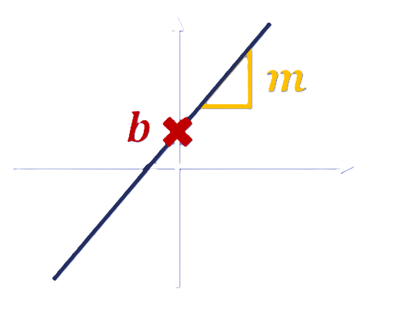
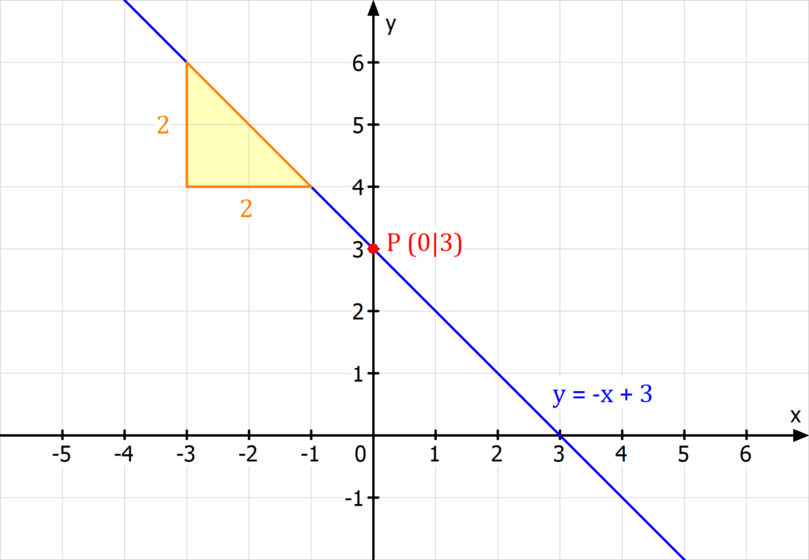

Was ist eine lineare Funktion?
Eine lineare Funktion beschreibt einen geraden Zusammenhang zwischen zwei Variablen. Sie hat die allgemeine Form: f(x) = mx + b, wobei m die Steigung und b der y-Achsenabschnitt ist.

Wie zeichnet man eine lineare Funktion?
Um eine lineare Funktion in ein Koordinatensystem einzuzeichnen, braucht man zwei Dinge:
- 1. Der y-Achsenabschnitt (b): Der Punkt, wo die Gerade die y-Achse schneidet.
- 2. Die Steigung (m): Sie gibt an, wie steil die Gerade verläuft.

Beispiele
- Beispiel 1:
f(x) = 2x + 3
→ Steigung = 2, y-Achsenabschnitt = 3
→ Start bei (0 | 3), dann pro Schritt nach rechts um 1 geht man 2 nach oben. - Beispiel 2:
f(x) = -0,5x + 4
→ Steigung = -0,5, y-Achsenabschnitt = 4
→ Start bei (0 | 4), dann pro Schritt nach rechts um 1 geht man 0,5 nach unten.